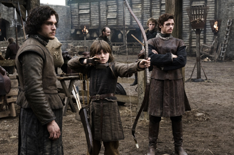

Рикон - младший сын лорда Винтерефелла Эддарда Старка и леди Кейтилин Старк. Рикон был описан как маленький и тихий мальчик с ярко-синими глазами и золотистыми волосами. Он был очень близок со своим братом Брандоном и сестрой Арьей. Когда его отец был казнен королем Джоффри Баратеоном, Рикон с остальными членами семьи бежал на север, где присоединился к своему брату Роббу, ставшему новым королем Севера. Во время одной из битв, Рикон был захвачен солдатами Ланнистеров и доставлен в Королевскую Гавань. Там он стал заложником короля Джоффри. Однако, благодаря усилиям Арьи, ему удалось бежать и присоединиться к своим братьям и сестре в Винтерфелле.
 Дана таблица people с атрибутами (столбцами): id, mother_id, father_id,
region_id, name, birth_date, death_date, is_alive, gender, biography.
Выведите сначала трех
персонажей, которые родились раньше остальных, а затем трех самых молодых
персонажей.
Каждое select выражение рекомендуется
оборачивать в круглые скобки.
created with
Website Builder Software .